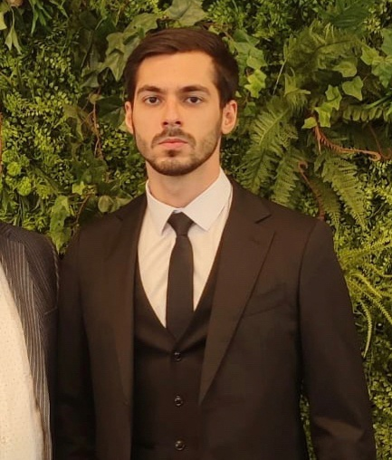

Ismaillhan Dzhabizade

Summary
I am a very perspective human with big experience in financial sphere.
Education
- Bachelor of Economics, Economy of organization - Siberian Institute of business and informational Techniligies (2020-2024)
Work Experience
Event specialist - Poet & Master
March 2022 - May 2022
- Organization and implementation on a turnkey basis: charity events, master classes, festivals, children's and adult competitions, interactive games, corporate events and parties, press conferences, conferences, forums, round tables, grand openings;
- Development of project concepts;
- Writing event scripts;
- Work as a presenter at concerts, festivals, press conferences, receptions;
Skills
- Customer service: ⭐️⭐️⭐️⭐️⭐️
- Organizational skills: ⭐️⭐️⭐️⭐️
- Financial knowledge: ⭐️⭐️⭐️⭐️⭐️
- Business negotiations: ⭐️⭐️⭐️⭐️
- Personnel management: ⭐️⭐️⭐️⭐️⭐️
Awards and Certifications
Other